- トップ
- インプラント
高田歯科クリニックのインプラント治療
横浜市港北区網島の歯医者「高田歯科クリニック」では、失った歯の機能を補う補綴（ほてつ）治療のひとつ、インプラント治療にも対応しています。手術を伴うインプラント治療には、高い技術力と徹底した衛生管理が不可欠です。当院では、精密治療で養われた技術力と完全個室の診療室を完備しており、安全・安心のインプラント治療の実現に日々努めています。
インプラント治療とは？
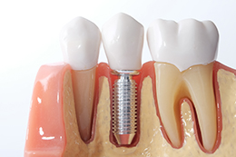
インプラント治療は、入れ歯やブリッジなどと同様に失った歯を補う治療法のひとつです。骨との結合がよいチタン製のねじ状の人工歯根を、歯槽骨（歯を支える顎の骨）に埋め込み、上部に天然歯と見分けがつかないセラミック製の人工歯を取り付ける治療法です。
インプラント治療は、従来の補綴治療と比較してもメリットが多いことから、近年、治療を希望される方が増えています。天然歯で噛むような感覚が蘇り、見た目も自然で美しいことが人気の理由です。
ただし、インプラント治療にもいくつか注意点があります。外科手術が必要で、治療期間も半年から1年と長いこと、さらに自費診療となるため治療費が高額になります。インプラント治療が可能かどうかは、患者様のお口や身体の健康状態にもよります。当院では、患者様のご希望とお口の状態、全身の健康状態、ライフスタイルなどを考慮して、最適だと思われる治療法をご提案しています。
インプラント・入れ歯・ブリッジの比較表
※表は左右にスクロールして確認することができます。
| インプラント | 入れ歯 | ブリッジ | |
|---|---|---|---|
| 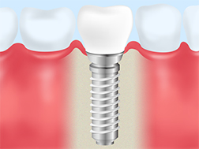 | 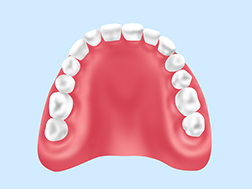 | 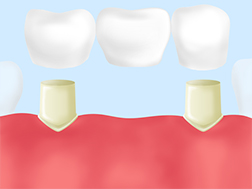 | |
| 治療方法 | チタン製のインプラント体（人工歯根）を、歯槽骨に埋め込み、その上に美しい人工歯を装着する | 採取した歯型から取り外し可能な人工歯を作成する | 歯がない部分の両隣の健康な歯を削り、そこへ橋を渡すように固定式の人工歯を取り付ける |
| 寿命 | メインテナンスを受け続ければ半永久的。10年残存率は9割を超える調査結果も | 4～5年 | 7～8年 |
| 費用 | 保険適用外の自費診療となるので高額 | 保険適用だと安価 | 保険適用だと安価 |
| 使用感 | 天然歯のような自然な噛み心地 | 着脱式のため、異物感がある。慣れるまで違和感がある。噛む力は他と比較するともっとも弱い | 装着後、使用中ともに違和感はなく自然。ただし、噛む力が顎の骨に伝わらないため、骨が痩せやすい |
| 審美性 | 自然な仕上がりで天然歯と見分けがつかない | 保険適用のものだと入れ歯とすぐわかり不自然 | 保険適用のものだと奥歯は金属になる。また前歯のブリッジは金属の表面にプラスティックを貼り付けているため経年的に変色してくる |
| デメリット |
|
|
|
インプラント治療の流れ
※表は左右にスクロールして確認することができます。
| STEP1. ドリリング |
STEP2. インプラント埋入 |
STEP3. 治癒期間 |
STEP4. 連結部の装着 |
STEP5. 人工歯の装着 |
|---|---|---|---|---|
| 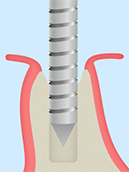 | 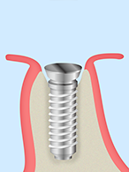 | 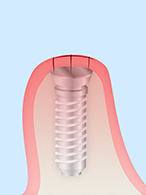 | 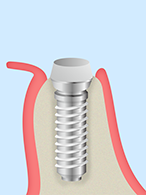 | 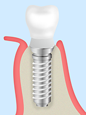 |
| 歯を失った部分の顎の骨に、ドリルで穴を開ける。状態に応じて歯ぐきを切開する必要がある。 | チタン製のインプラント体（人工歯根）を埋め込む。治療法によってはここでSTEP4のアバットメント装着を行うことがある | 歯肉を縫合し、インプラント体と顎の骨がしっかり結合するまで待つ | 骨との結合が確認できたら、インプラントの上部にアバットメントと呼ばれる連結部品を取り付ける | STEP4の傷の治癒を待って、アバットメントの上部に、セラミック製の人工歯を取り付け、完成 |
当院のインプラント治療
PICK UP！3Dデータを活用し、より正確なインプラント手術を行います
外科手術を伴うインプラント治療には、さまざまな配慮が必要です。特に、顎の骨にドリルで穴を開け、インプラント体を埋入する際には、周囲を複雑に血管や神経が通っているため、間違いのない角度や深さで埋入する必要があります。
横浜市港北区網島の歯医者「高田歯科クリニック」では、精確な診断と、綿密なシミュレーションを行うために、歯科用CTによる3D立体画像診断を行っています。平面的にしか確認できないレントゲン写真と異なり、さまざまな角度からお口周りの状況を把握することができます。またインプラントの埋入方向が難しい症例やご希望のある方には術前にCT撮影を行い、そのデータを再構成した3D 画像を最先端のコンピュータシステム＝SimPlant systemにて情報解析を行い、患者様の解剖学的情報を考慮した正確なインプラント埋入計画を立案しています。
コーヌスクローネ
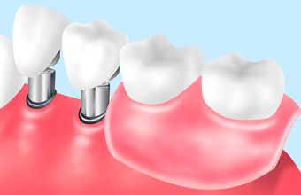
コーヌスクローネは、健康に残っている歯根部に金属の被せ物を施し、そこへ茶筒の蓋のようにしっかり噛み合う人工歯を取り付ける入れ歯の種類です。当院では、このコーヌスクローネの技術をインプラント治療でも応用しています。
インプラントオーバーデンチャー
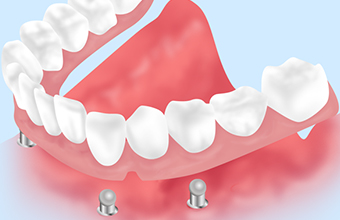
インプラントを支点として、取り外し可能な入れ歯を装着する治療法です。総入れ歯であっても、片顎2～4本のインプラントでしっかり入れ歯を支えられます。ズレたり外れたりすることがないため、噛みやすく痛みがありません。失った歯の本数に応じてインプラント埋入の本数は異なります。